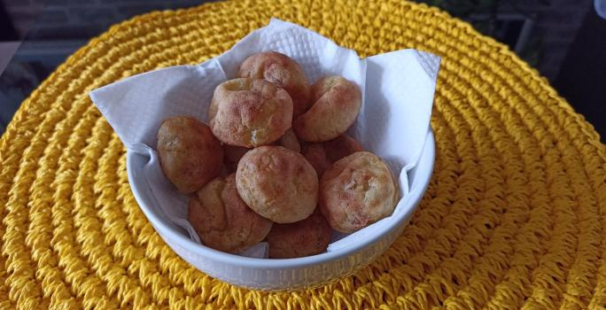

Pão Vegetariano de Batata e Tapioca

Ingredientes
1 batata inglesa pequena cozida sem casca e amassada
3 colheres (sopa) de goma de tapioca
1 colher (sopa)
de azeite
1 colher (chá) de sal
2 colheres (sopa) de água
1 colher (chá) de fermento em pó
Modo de preparo
1.Em um recipiente, misture a batata, a goma de tapioca, o azeite e o sal. Adicione a água aos poucos, até que a
massa fique homogênea e modelável.
2. Faça bolinhas com distância de pelo menos 2 dedos e coloque em uma
assadeira untada ou com papel manteiga.
3. Leve ao forno médio (180ºC), preaquecido por cerca de 20 minutos ou
até que estejam dourados. Sirva.